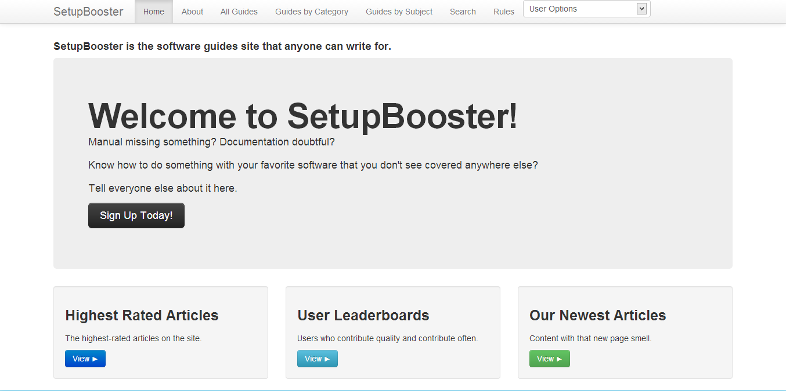
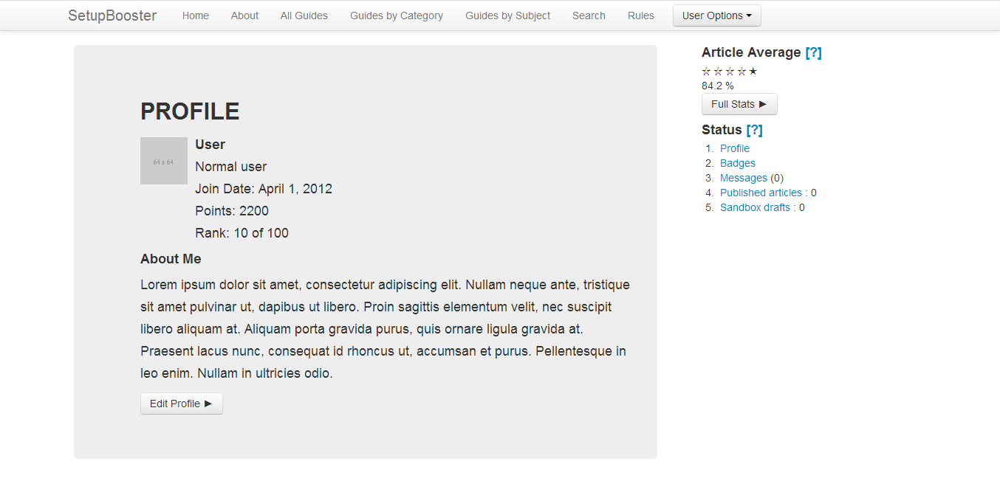
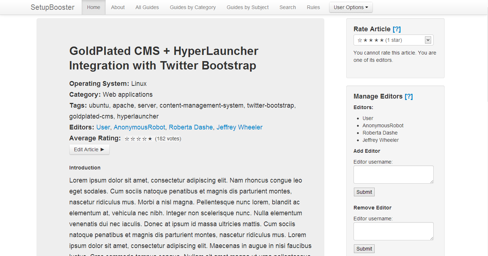

The home page will link to three types of content: the highest-rated articles, the list of the highest-rated users (by point total), and the list of new articles.
Above: A mockup of the home page.
User profile pages will cover basic information such as name, join date, point total, badges, and articles written.
Above: A mockup of a user profile page. The widgets related to rating tracking and the message and article management tools are on the right side.
Above: The user dropdown menu. It provides access to the message and article management tools site-wide.
Article content takes up most of the space here. Tags, editors, and the subject of the article are listed below the title. Editors appear in the order in which they were added.
Above: If the user is an editor of an article page, the user will see tools to manage editors. Any editor will be able to add or remove an editor by typing in their username to the add or remove tools.
Above: The ratings tool is limited to registered users. Users can only rate articles which they are not editors of. Users must request editorship from one of the current editors in order to be made an editor.
{kind=link}
{kind=link}
{kind=link}
{kind=link}
{kind=link}